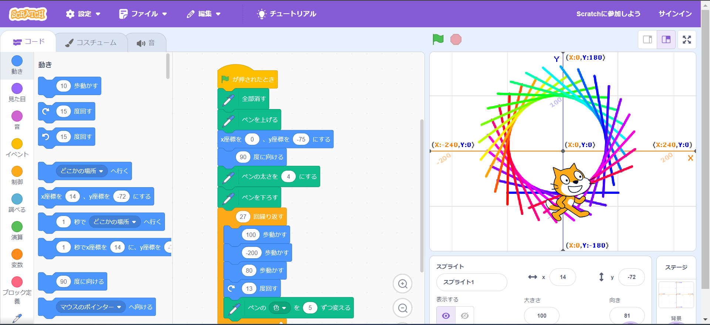
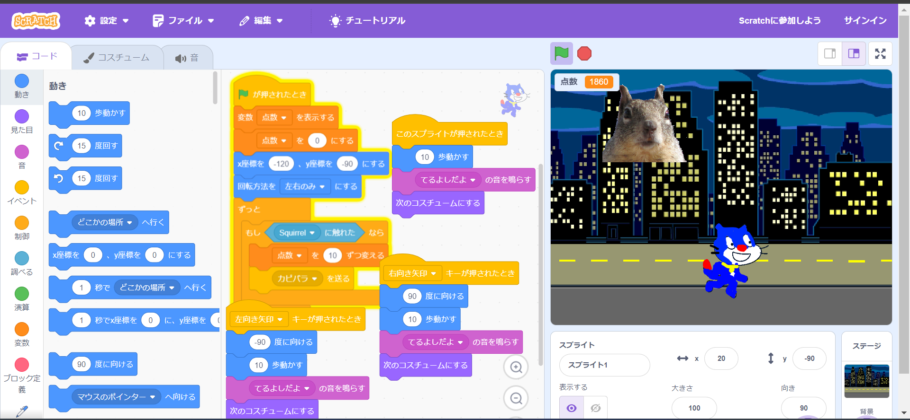

1週目のレポート ： 公大高専１年実習I-1
8班33番 わるいーじ
第1週目
1-1 サイエンスアート

1.内容
<スクラッチを使って猫が動いて線を描くプログラムを作成した。
2.感想
E1でも似たようなプログラミングを作成したが比較的簡単で分かりやすいプログラミングだったので行いやすかった。 次は自分でもっと凝ったものを作成できたらなと思った。
1-2 ゲーム

1.内容
猫が落ちてくるカピバラに触れると１０点が入るゲームを作成した。
2.感想
簡易的なゲームではあったがプログラム自体は凝っていてとても感心した。ひとりでは全然進まなくて苦労もした。 もっと改善できたり面白くできたりもする作品だったので家で少し工夫して製作出来たらいいなと思った。
1-3 ホームページ作成
私のホームページ
1.内容
自己紹介と部活と趣味をかき全世界に発信するホームページの作成
2.感想
初めて自分のホームページをつくって楽しかった反面難しかったし大変だった。 しかしどのようにしてホームページがつくられどのようにプログラムされているかを学ぶことができてとてもいい経験になった。